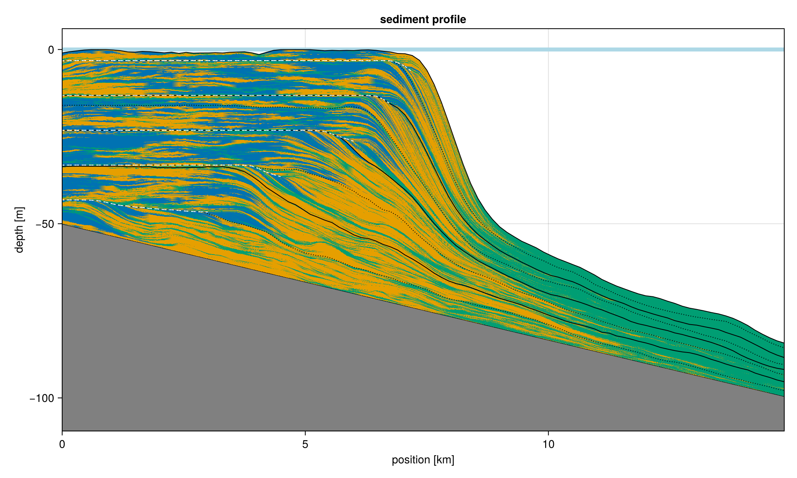
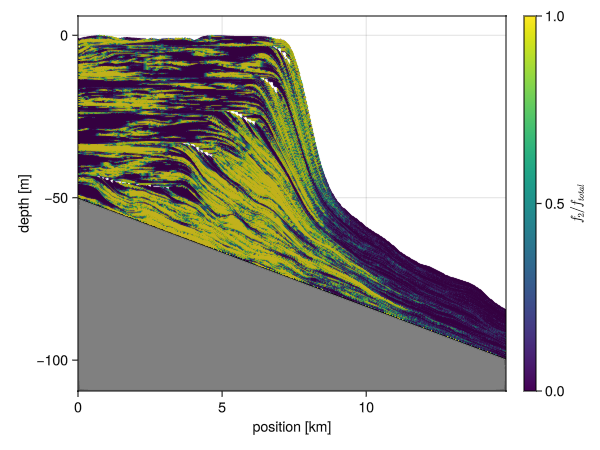

Profile Plotting

The sediment profile is probably the most important visualization that we provide. By default it allows us to study the sediment composition of a section, by plotting the argmax of the deposition. In cases where significant amounts of sediment is eroded, all deposition is plotted, and it is assumed that newest depositions are shown on top of possible older ones.
#| creates: docs/src/_fig/sediment_profile.png
#| requires: data/output/alcap-example.h5
#| collect: figures
module Script
using CairoMakie
using CarboKitten.Export: read_slice
using CarboKitten.Visualization: sediment_profile
function main()
save("docs/src/_fig/sediment_profile.png",
sediment_profile(read_slice("data/output/alcap-example.h5", :profile)...))
end
end
Script.main()If you want to visualize something other than the argmax of the deposition, you may use the profile_plot! function. For example, we can plot the fraction of second facies over total.

#| creates: docs/src/_fig/profile_fraction.png
#| requires: data/output/alcap-example.h5
#| collect: figures
module Script
using GLMakie
using CarboKitten.Export: read_slice
using CarboKitten.Visualization: profile_plot!
function main()
(header, slice) = read_slice("data/output/alcap-example.h5", :profile)
fig = Figure()
ax = Axis(fig[1, 1])
x = header.axes.x
t = header.axes.t
plot = profile_plot!(x -> x[2]/sum(x), ax, header, slice; colorrange=(0, 1))
Colorbar(fig[1, 2], plot; label=L"f_2 / f_{total}")
save("docs/src/_fig/profile_fraction.png", fig)
fig
end
end
Script.main()Implementation
Before we plot anything, we need to make sure that only net positive sediment is still present in our data. We use the stratigraphic_column algorithm to remove sediment from the record that is later disintegrated.
Exploding Vertices
The profile plot is rendered using Makie's mesh function. This function accepts an array of (two-dimensional) vertices and an array of faces, usually triangles. The way mesh rendering works, is that the colour of a face is interpolated between its vertices. Now, the amount of sediment in a given column can be interpreted as sampling a location so the interpretation of colouring a vertex seems the right one. However in the depth (z) we are indicating a clear layer being between two depths. We need to duplicate vertices in the vertical direction in order to give ajacent layers different colours. The explode_quad_vertices function does exactly that:
"""
explode_quad_vertices(v)
Takes a three dimensional array representing a grid of vertices. This function duplicates these
vertices in the vertical direction, so that an amount of sediment can be given a single color.
Returns a tuple of vertices and faces (triangles), suitable for plotting with Makie's `mesh`
function.
"""
function explode_quad_vertices(v::Array{Float64,3})
w, h, d = size(v)
points = zeros(Float64, w, h - 1, 2, d)
n_vertices = 2 * w * (h - 1)
n_quads = (w - 1) * (h - 1)
@views points[:, :, 1, :] = v[1:end, 1:end-1, :]
@views points[:, :, 2, :] = v[1:end, 2:end, :]
idx = reshape(1:n_vertices, w, (h - 1), 2)
vtx1 = reshape(idx[1:end-1, :, 1], n_quads)
vtx2 = reshape(idx[2:end, :, 1], n_quads)
vtx3 = reshape(idx[2:end, :, 2], n_quads)
vtx4 = reshape(idx[1:end-1, :, 2], n_quads)
return reshape(points, n_vertices, d),
vcat(hcat(vtx1, vtx2, vtx3), hcat(vtx1, vtx3, vtx4))
endTo map colours onto the returned mesh, we need to take care to duplicate each row in the input.
Plotting Unconformities
To indicate unconformities in profile plots, we need to do two things:
- Find those times and locations where the platform is exposed. To reduce noise we can set a minimum time span for which the platform needs to be exposed before showing up in this visualization.
- Reduce the detected unconformities to line segments (see the Skeleton Algorithm).
"""
plot_unconformities(ax, header, data_slice, minwidth; kwargs...)
plot_unconformities(ax, header, data_slice, minwidth::Bool; kwargs...)
plot_unconformities(ax, header, data_slice, minwidth::Int; kwargs...)
Scans the given `data_slice` for unconformities, and plots those using
Makie `linesegments`. The `minwidth` argument controls for how many time
steps the platform needs to be exposed before we plot it. For `minwidth = true`
the default width of 10 time steps is taken.
Additional keyword arguments are forwarded to the `linesegments!` call.
"""
function plot_unconformities(ax::Axis, header::Header, data::DataSlice, h, minwidth::Nothing; kwargs...)
@info "Not plotting unconformities, got minwidth: $(minwidth)"
end
function plot_unconformities(ax::Axis, header::Header, data::DataSlice, h, minwidth::Bool; kwargs...)
if minwidth
plot_unconformities(ax, header, data, h, 10; kwargs...)
end
end
function plot_unconformities(ax::Axis, header::Header, data::DataSlice, h, minwidth::Int; kwargs...)
x = header.axes.x |> in_units_of(u"km")
wi = data.write_interval
hiatus = skeleton(water_depth(header, data) .< 0.0u"m", minwidth=minwidth)
if !isempty(hiatus[1])
verts = [(x[pt[1]], h[pt...] |> in_units_of(u"m")) for pt in hiatus[1]]
linesegments!(ax, vec(permutedims(verts[hiatus[2]])); kwargs...)
end
endPlotting Co-eval Lines
"""
coeval_lines!(ax::Axis, header::Header, data::DataSlice, tics::Bool)
Plot coeval lines using default settings. If `tics` is false, nothing is done.
"""
function coeval_lines!(ax::Axis, header::Header, data::DataSlice, adm::AbstractMatrix{Amount}, n_tics::Bool)
if !n_tics
return
else
coeval_lines!(ax, header, data, adm)
end
end
"""
coeval_lines!(ax::Axis, header::Header, data::DataSlice, tics::Vector{Time}; kwargs...)
Plot coeval lines for given times. The times in `tics` are looked up in `header.axes.t`
to find which indices to plot.
"""
function coeval_lines!(ax::Axis, header::Header, data::DataSlice, adm::AbstractMatrix{Amount}, tics::Vector{Time}; kwargs...)
t = header.axes.t[1:data.write_interval:end]
indices::Vector{Int} = [searchsortedfirst(t, i) for i in tics]
coeval_lines!(ax, header, data, adm, indices; kwargs...)
end
"""
coeval_lines!(ax::Axis, header::Header, data::DataSlice, n_tics::Tuple{Int, Int})
Plot coeval lines on regular intervals given by `n_tics`. The tuple gives the number of intervals
for both minor and major tics, plotted as dotted and solid black lines respectively.
If you need more control over the aestetics of these lines, use the other `coeval_lines!` methods.
"""
function coeval_lines!(ax::Axis, header::Header, data::DataSlice, adm::AbstractMatrix{Amount}, n_tics::Tuple{Int, Int} = (4, 8))
n_steps = div(header.time_steps, data.write_interval)
n_major_tics, n_minor_tics = n_tics
major_tics = div.(n_steps:n_steps:n_steps*n_major_tics, n_major_tics) .+ 1
minor_tics = filter(
t->!(t in major_tics),
div.(n_steps:n_steps:n_steps*n_minor_tics, n_minor_tics) .+ 1) |> collect
coeval_lines!(ax, header, data, adm, minor_tics, color=:black, linewidth=1, linestyle=:dot)
coeval_lines!(ax, header, data, adm, major_tics, color=:black, linewidth=1, linestyle=:solid)
end
"""
coeval_lines!(ax::Axis, header::Header, data::DataSlice, tics::Vector{Int}; kwargs...)
Plot coeval lines for the given indices. The `kwargs...` are forwarded to a call to Makie's
`lines!` procedure.
"""
function coeval_lines!(ax::Axis, header::Header, data::DataSlice, adm::AbstractMatrix{Amount}, tics::Vector{Int}; kwargs...)
x = header.axes.x |> in_units_of(u"km")
h = adm |> in_units_of(u"m")
for t in tics
lines!(ax, x, h[:, t]; kwargs...)
end
end
function plot_sealevel!(ax::Axis, header::Header)
sea_level = header.sea_level[end] |> in_units_of(u"m")
hlines!(ax, sea_level, color=:lightblue, linewidth=5, label="end sea level")
endmodule SedimentProfile
import CarboKitten.Visualization: sediment_profile, sediment_profile!, profile_plot!, coeval_lines!
using CarboKitten.Visualization
using CarboKitten.Utility: in_units_of
using CarboKitten.Export: Header, Data, DataSlice, read_data, read_slice
using CarboKitten.Algorithms: skeleton
using CarboKitten.Output.Abstract: stratigraphic_column, water_depth
using Makie
using GeometryBasics
using Unitful
using Statistics: mean
const Rate = typeof(1.0u"m/Myr")
const Amount = typeof(1.0u"m")
const Length = typeof(1.0u"m")
const Time = typeof(1.0u"Myr")
const na = [CartesianIndex()]
<<explode-vertices>>
<<plot-unconformities>>
<<plot-coeval-lines>>
"""
profile_plot!(ax, header, data_slice; mesh_args...)
Generic profile plot. This sets up a mesh for plotting with the Makie `mesh!`
function, plots the initial topography and the mesh by passing `mesh_args...`.
The `color` array should have the same size as a single facies for `data.production`.
"""
function profile_plot!(ax::Axis, header::Header, data::DataSlice; color::AbstractArray, mesh_args...)
x = header.axes.x |> in_units_of(u"km")
t = header.axes.t |> in_units_of(u"Myr")
n_facies, n_x, n_t = size(data.production)
total_subsidence = (header.axes.t[end] - header.axes.t[1]) * header.subsidence_rate
initial_topography = header.initial_topography[data.slice...]
sc = stratigraphic_column(data)
h = repeat(initial_topography .- total_subsidence, 1, n_t+1)
@views h[:, 2:end] .+= cumsum(sum(sc, dims=1)[1,:,:], dims=2)
verts = zeros(Float64, n_x, n_t+1, 2)
@views verts[:, :, 1] .= x
@views verts[:, :, 2] .= h |> in_units_of(u"m")
v, f = explode_quad_vertices(verts)
total_subsidence = header.subsidence_rate * (header.axes.t[end] - header.axes.t[1])
bedrock = (header.initial_topography[data.slice...] .- total_subsidence) |> in_units_of(u"m")
lower_limit = minimum(bedrock) - 20
band!(ax, x, lower_limit, bedrock; color=:gray, label="initial topography")
lines!(ax, x, bedrock; color=:black, label="initial topography")
ylims!(ax, lower_limit + 10, nothing)
xlims!(ax, x[1], x[end])
ax.xlabel = "position [km]"
ax.ylabel = "depth [m]"
c = reshape(color, n_x * n_t)
mesh!(ax, v, f; color=vcat(c, c), mesh_args...)
end
"""
profile_plot!(f, ax, header, data_slice; mesh_args...)
Instead of explicitely passing the color data as an array, this generates the
colors from a function `f` over the deposition data. So `f` should have signature
`AbstractVector -> Float` or possibly `AbstractVector -> RGB` (whatever Makie accepts).
Here the vector input has size of the number of facies.
"""
function profile_plot!(f::F, ax::Axis, header::Header, data::DataSlice; mesh_args...) where {F}
color = f.(eachslice(data.deposition, dims=(2, 3)))
profile_plot!(ax, header, data; color=color, mesh_args...)
end
"""
sediment_profile!(ax, header, data; show_unconformities)
Plot the sediment profile, choosing colour by dominant facies type (argmax). Unconformaties
are shown when the sediment is subaerially exposed (even if sediment is still deposited
due to a set intertidal zone).
"""
function sediment_profile!(ax::Axis, header::Header, data::DataSlice;
show_unconformities::Union{Nothing,Bool,Int} = true,
show_coeval_lines::Union{Bool,Tuple{Int, Int},Vector{Int},Vector{Time}} = true,
show_sealevel::Bool = true)
x = header.axes.x |> in_units_of(u"km")
t = header.axes.t |> in_units_of(u"Myr")
n_facies, n_x, n_t = size(data.production)
total_subsidence = (header.axes.t[end] - header.axes.t[1]) * header.subsidence_rate
initial_topography = header.initial_topography[data.slice...]
sc = stratigraphic_column(data)
h = repeat(initial_topography .- total_subsidence, 1, n_t+1)
@views h[:, 2:end] .+= cumsum(sum(sc, dims=1)[1,:,:], dims=2)
if show_sealevel
plot_sealevel!(ax, header)
end
plot = profile_plot!(argmax, ax, header, data; alpha=1.0,
colormap=cgrad(Makie.wong_colors()[1:n_facies], n_facies, categorical=true))
coeval_lines!(ax, header, data, h, show_coeval_lines)
minwidth = show_unconformities
plot_unconformities(ax, header, data, h, minwidth; label = "unconformities",
color=:white, linestyle=:dash, linewidth=1)
ax.title = "sediment profile"
return plot
end
"""
sediment_profile(header, data_slice; show_unconformities=true)
Plot the sediment profile from `data_slice`. This takes the deposited sediments and
find the dominant facies at every point. By default unconformities are shown using
dashed white lines. If this generates too much visual noise, you can increase the
treshold (default 10).
"""
function sediment_profile(header::Header, data_slice::DataSlice; show_unconformities::Union{Bool,Int,Nothing} = true)
fig = Figure(size=(1000, 600))
ax = Axis(fig[1, 1])
sediment_profile!(ax, header, data_slice; show_unconformities = show_unconformities)
return fig
end
end # module